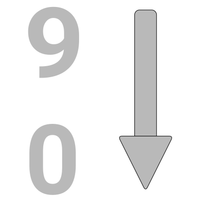
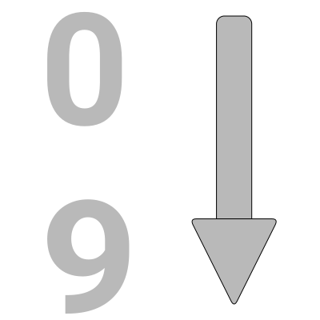
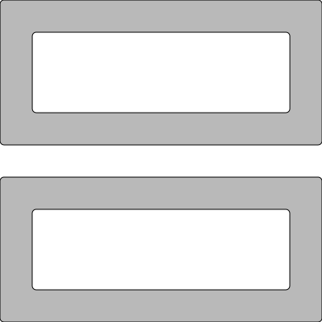
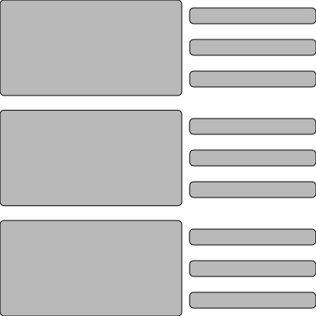

TTV Right Now
Login with Twitch
Twitch User
Login with your Twitch account
Live streams from people you follow
will be showed here once you're logged in.
Use the button located in the
upper right corner.
Twitch Right Now
Followed Streams
Stream Notifications



